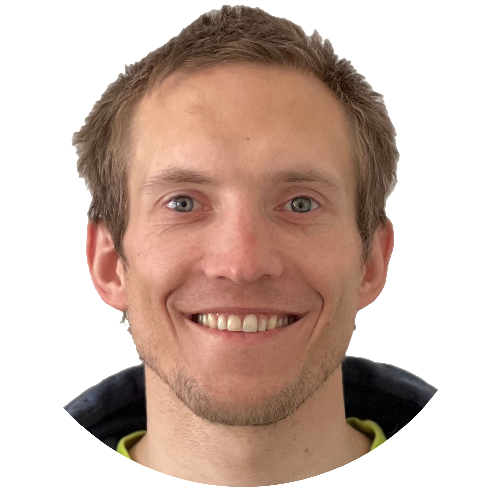

Andreas ZieglerI am a PhD candidate at the Cognitive Systems Group at the University of Tübingen in collaboration with Sony AI working on event-based vision for fast robot control. During my PhD, I did an internship at Prophesee, supervised by Dr. Amos Sironi and at Sony AI, supervised by Dr. Raphaela Kreiser and Dr. Naoya Takahashi. Before I started my PhD studies, I worked as a Robotics Engineer for a few years. Previously, I was a Research Assistant at the Robotics and Perception Group continuing the project of my Master thesis. Before that, I was a Research Associate Intern at Disney Research Zurich. I have done my Master thesis at the Robotics and Perception Group, was a Computer Vision & Robotics intern at Pix4D while I was a master student at D-ITET at ETH Zurich focusing on Robotics, Computer Vision, and Machine Learning. Before my master studies, I worked at the Research in Orthopedic Computer Science (ROCS) and at the Institute of Biomechanics after I completed my BSc in Electrical Engineering at the University of Applied Sciences of Eastern Switzerland (FHO). I'm always happy to collaborate with others on interesting projects. Therefore, do not hesitate to reach out! Email / LinkedIn / CV (short) & (long) / Bluesky / Scholar / GitHub |
 |
ResearchI am passioned about an (application-driven) mix of robotics, computer vision, and machine learning research. My vision is to develop novel algorithms and make them work on real robots. |

|
Spin Detection Using Racket Bounce Sounds in Table TennisThomas Gossard*, Julian Schmalzl*, Andreas Ziegler, Andreas Zell arXiv, 2024 arxiv / doi / cite / |

|
Detection of Fast-Moving Objects with Neuromorphic HardwareAndreas Ziegler, Karl Vetter, Thomas Gossard, Jonas Tebbe, Sebastian Otte, Andreas Zell arXiv, 2024 arxiv / website / youtube / doi / cite / |

|
eWand: A calibration framework for wide baseline frame-based and event-based camera systemsThomas Gossard*,Andreas Ziegler*, Levin Kolmar, Jonas Tebbe, Andreas Zell IEEE International Conference on Robotics and Automation (ICRA), 2024 arxiv / code / website / youtube / doi / cite / |

|
Table tennis ball spin estimation with an event cameraThomas Gossard*, Julian Krismer*, Andreas Ziegler, Jonas Tebbe, Andreas Zell IEEE/CVF Conference on Computer Vision and Pattern Recognition Workshops (CVPRW), 2024 arxiv / doi / cite / |

|
SpinDOE: A ball spin estimation method for table tennis robotThomas Gossard, Jonas Tebbe, Andreas Ziegler, Andreas Zell IEEE/RSJ International Conference on Intelligent Robots (IROS), 2023 arxiv / code / website / doi / cite / |

|
A multi-modal table tennis robot systemAndreas Ziegler*,Thomas Gossard*, Karl Vetter, Jonas Tebbe, Andreas Zell RoboLetics: Workshop on Robot Learning in Athletics @CoRL 2023, 2023 arxiv / doi / cite / |

|
Real-time event simulation with frame-based camerasAndreas Ziegler, Daniel Teigland, Jonas Tebbe, Thomas Gossard, Andreas Zell IEEE International Conference on Robotics and Automation (ICRA), 2023 arxiv / code / poster / website / youtube / doi / cite / |
Focus on time: dynamic imaging reveals stretch-dependent cell relaxation and nuclear deformationAron N. Horvath, Andreas Ziegler, Stephan Gerhard, Claude N. Holenstein, Benjamin Beyeler, Jess G. Snedeker, Unai Silvan Biophysical Journal, 2021 doi / cite / |
|
Time-controlled Multichannel Dynamic Traction Imaging of Biaxially Stretched Adherent CellsAron N. Horvath, Andreas Ziegler, Stephan Gerhard, Claude N. Holenstein, Benjamin Beyeler, Jess G. Snedeker, Unai Silvan bioRxiv, 2020 arxiv / |
|

|
Exploration Without Global Consistency Using Local Volume ConsolidationTitus Cieslewski, Andreas Ziegler, Davide Scaramuzza International Symposium on Robotics Research (ISRR), 2019 arxiv / youtube / cite / |
Talks |
|
|
Event-Based Vision for Fast Robot ControlZHAW - Neuromorphic Vision Hackathon 2024-10-22 slides / |
|
Design and source code from Leonid Keselman's website |